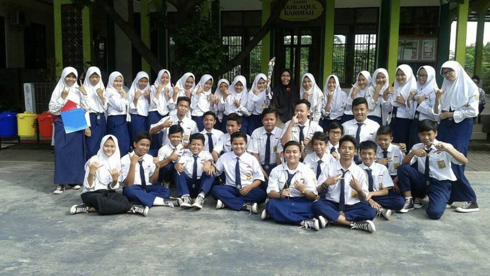
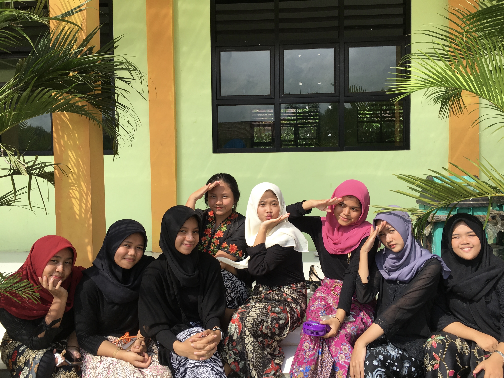
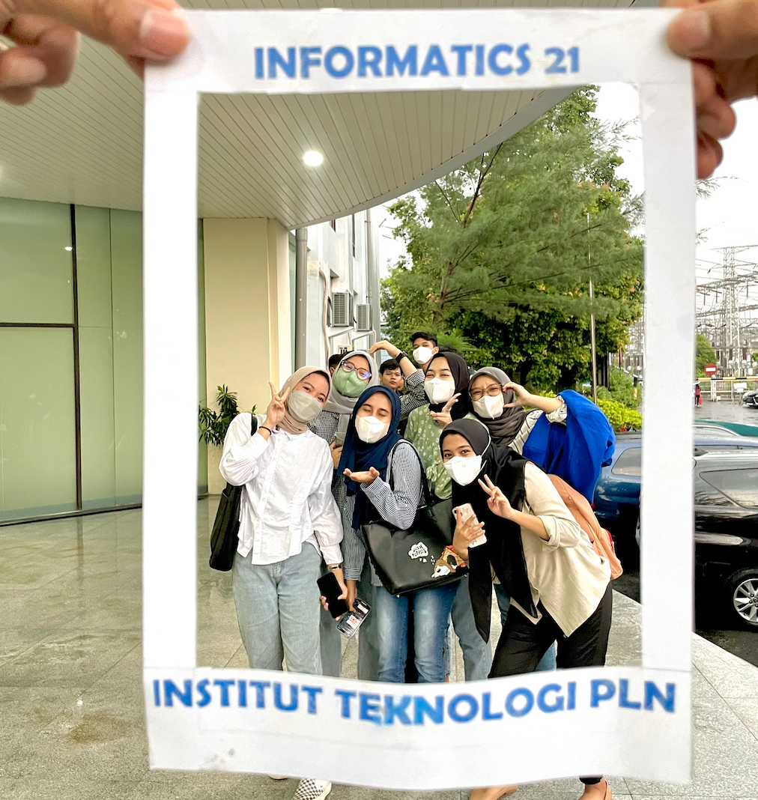

Pendidikan yang pernah saya jalani
Saya bersekolah playgroup sejak umur 3 tahun, melanjutkan TK A dan TK B
alamat : Jl Sultan Ageng Tirtayasa No 69 Rt 01 Rw 03 Pasar Bengkok, RT.001/RW.003, Sudimara Pinang, Kec. Tangerang, Kota Tangerang, Banten 15145
Pergi ke LokasiDokumentasi saat TK
Saya bersekolah tingkat Sekolah Dasar selama 6 tahun, yang berada di daerah Tangerang
Alamat : Jl. KH Hasyim Ashari, RT.001/RW.003, Pinang, Kec. Tangerang, Kota Tangerang, Indonesia 15144
Pergi ke LokasiDokumentasi saat SD : (Foto Hilang)
Saya bersekolah tingkat Sekolah Menengah Pertama selama 3 tahun, yang berada di daerah Tangerang
Alamat : Jl. Perintis Kemerdekaan I No.3 7 3, RT.007/RW.003, Babakan, Kec. Tangerang, Kota Tangerang, Banten 15118
Pergi ke LokasiDokumentasi saat SMP
Saya bersekolah tingkat Sekolah Menengah Atas selama 3 tahun, yang berada di daerah Tangerang
Alamat : Jl. H. Jali No.9, RT.001/RW.002, Kunciran Jaya, Kec. Pinang, Kota Tangerang, Banten 15144
Pergi ke LokasiDokumentasi saat SMA
Saya seorang mahasiswi dengan jurusan informatika (Semester 3)
Alamat : Menara PLN, Jl. Lkr. Luar Barat, RT.1/RW.1, Duri Kosambi, Kecamatan Cengkareng, Kota Jakarta Barat, Daerah Khusus Ibukota Jakarta 11750
Pergi ke LokasiDokumentasi saat Kuliah
